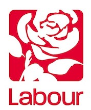

Healthcare

Conservatives's Plans
Leader: Boris Johnson
Top priorities
- Bring back the Withdrawal Agreement Bill to Parliament before Christmas to achieve Brexit by the end of January
- £20.5bn additional funding for the NHS in England by 2023-24, 50 million more GP appointments and 50,000 more nurses
- 20,000 more police officers over the next three years in England and Wales
- No rises in income tax, National Insurance contributions or VAT
- Introduce an Australian-style points-based immigration system, which treats everyone equally regardless of where they come from

Labour's Plans
Leader: Jeremy Corbyn
Top priorities
- £400bn national transformation fund, including £250bn for energy, transport and the environment, and £150bn for schools, hospitals and housing
- £75bn for 100,000 new council homes a year by 2024 and 50,000 affordable homes a year through Housing Associations
- Free full-fibre broadband for every home and business in the UK by 2030
- £10-an-hour minimum wage for all workers
- Hold another referendum on Brexit

Liberal Democrats' Plan
Leader: Jo Swinson
Top priorities
- 1p rise in income tax to invest in health and social care, allowing the NHS budget to be increased by £26bn a year by 2023-24
- Ringfence funding for mental health services to ensure mental and physical health are treated with equal importance
- £10bn from the capital investment budget for equipment and buildings
- End the shortage of GPs by 2025
- Create an independent budget monitoring body for health and care, similar to the Office for Budget Responsibility.

Green Party's Plans
Leader: Siân Berry and Jonathan Bartley
Top priorities
- Increase funding for the NHS by at least £6bn a year until 2030, with a further £1bn a year to reinstate nursing bursaries
- £4.5bn a year to provide free social care for over-65s who need support in their own homes
- Expand NHS provision to include dentistry, prescriptions and mental health treatment
- Ensure a publicly funded NHS without private sector involvement
- Make mental health a much higher priority with increased funding